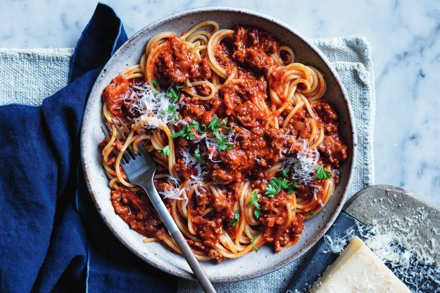

Spaghetti bolognese Recipe

Description
This easy family favourite uses just 5 ingredients and 15 minutes of your time, but will be gobbled up in no time!
Ingredients
- 500g Cook with Curtis Italian Recipe Beef & Pork Mince
- 500g jar tomato pasta sauce
- 300g spaghetti
- Beef Mince
- Finely grated parmesan, to serve
- Finely chopped flat-leaf parsley, to serve
- HHeat a large non-stick frying pan over medium-high heat. Add mince and cook, stirring to break up lumps, for 3 mins or until cooked through. Add pasta sauce and ½ cup (125ml) water. Reduce heat to low and simmer, stirring occasionally, for 10 mins or until sauce thickens slightly.
- Meanwhile, bring a large pot of water to the boil over high heat. Add the spaghetti and cook, stirring often, for 8 mins or until tender but still firm to the bite. Drain, reserving ½ cup (125ml) of the cooking liquid.
- Add the spaghetti to the sauce and toss to coat, adding enough reserved cooking liquid to moisten mixture as needed. Season with salt and pepper. Top with parmesan and parsley.